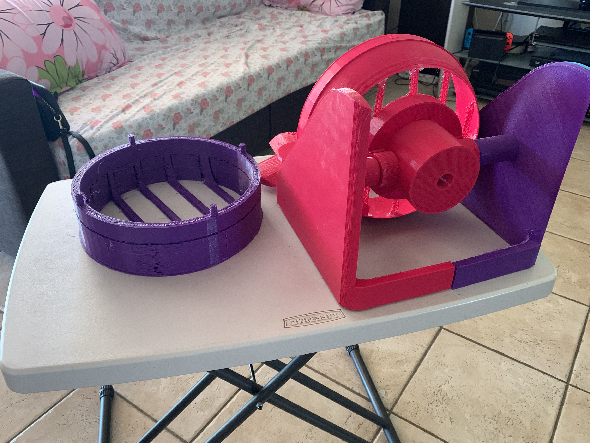
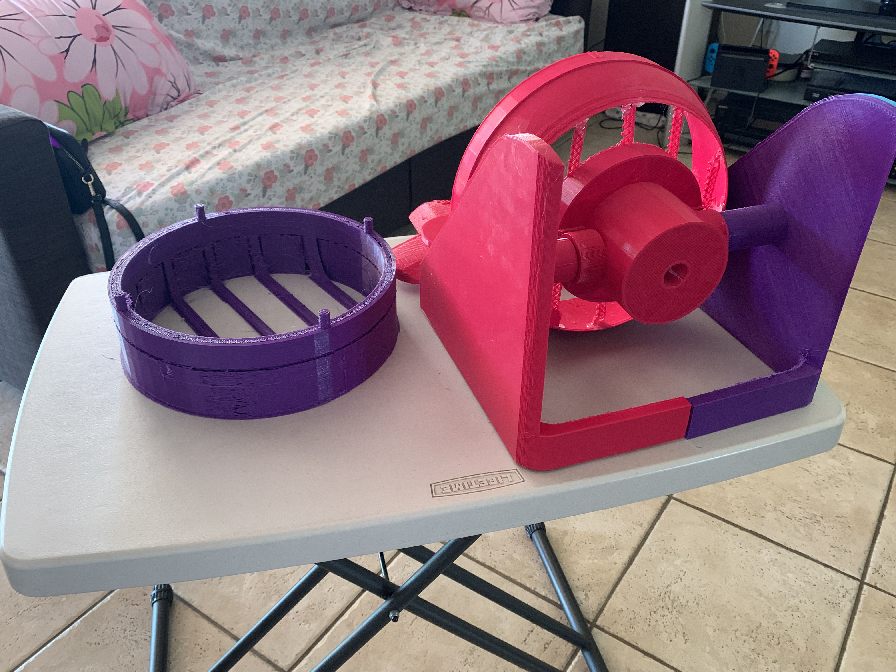
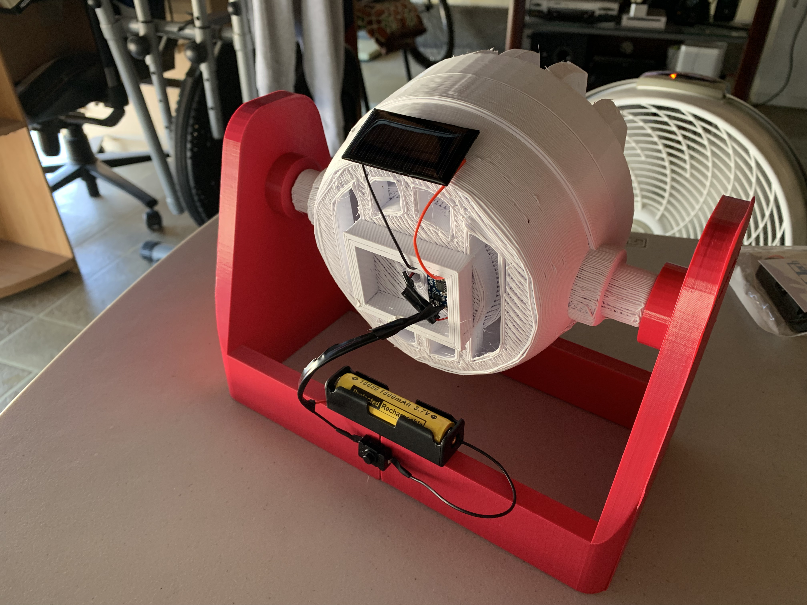
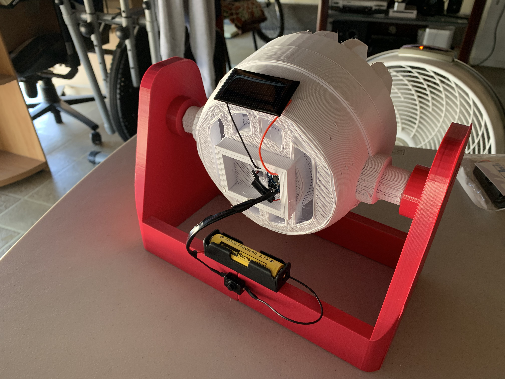

3D Printed Solar Powered Fan
Date Began: July 2023 ~ Date Ended: August 2023
Exposition
Hello, welcome to my first project post! There a lot of things that I am interested in, and it feels all interconnected in a way. Think of it like a spider web being formed, where different bugs are being attracted to for a spider to feast on. Pretend I'm the spider and the different types of bugs that I can eat are all of the ideas in my mind that I like to entertain. If bugs to a spider consists of different tastes, textures, and smells, ideas to me are an accumulation of things that I like to predict, whether it's wondering about something big as whether the universe can split into sub-universes, to something as small as how my favorite characters can interact in an alternate reality. With that imagery out of the way, for awhile now, I've enjoyed diving into the potential of renewable energy and how it can assist in cleaning up the pollution within the planet. A lot of the time, whenever renewable energy application is being talked about, a lot of it is being applied on a bigger scale, such as electric generation or transporation. However, I have wondered as to whether it can be applied onto a smaller scale. Maybe like everyday objects that people use? Besides renewable energy, I've also have dived into 3D printing and the things that one can do with it. 3D printing is an amazing discovery, because of the fact you can basically make anything you wanted (well, as long as you have a program and the printer, but you know what I mean).
Now, you may be thinking to yourself, "Ruth, what was that entire monologue you've delivered leading up to?" I've flirted with the idea of making whatever I thought of, and because I had time to kill during summer vacation, why not actualize one of my ideas? The hot rays of the sun during the hellish summer can be utilized into something that can make suriving during the season a (bit) bareable. A solar powered fan! I am very well-aware that this phenomenom of a project is nothing novel. However, I have wanted to try making something from scratch, and this was one of the ideas that I wanted to try making happen. What I mean by making something from scratch, is the entire thing, and this is what the point of this post is going to be. Join me, like how Sam joined Frodo on his journey to destroy the Ring in the fires of Mordor, and read through the process of how it all came together.
Rising Action
Now, before I actually did anything, I wanted to first get the idea of making this solar powered fan out of my mind. So I took a piece of paper, and jotted down how I imagined the fan would look like. At this stage, I wasn't really caring about any of the details, but rather the general idea of how I wanted my fan to look like. After sketching out a rough outline of the fan, I did some hypothetical measurements to see how big I wanted it to be. For that, the overall measurements (not including the measurments for each specific part) would be 7 x 7 inches. My idea was that the fan would be small enough to be portable, as the battery that I'll be using will be powered through a solar power, which would be perfect for having a cooling source while one was outside. You'd be able to take it on a car trip, on a picnic, to a concert, on a hike, pretty much anywhere one can think of. (As I'm writing this, I now think that it could've been designed to act more as a handheld, rather than having a stand since I thought about it being a portable. However, that can be something that I can do if I end up revisiting this again.)
With the basic sketch finished, I began to start designing it on SolidWorks to create a 3D model that I was going to end up printing. I will say that I didn't stick to the hypothetical measurments when I did the initial prototype design, as I thought it might've been too small for my liking. Which is why I sized it up a bit by a couple of inches. Because the fan will also require me to do a bit of electrical work (unfortunately), I had to take into account the measurements for the components I'll be using. For the components, these was what I was going to be working with (I will also have links embedded if you want more information regarding what I used);
➡ Circuit: HiLetgo TP4056 Lithium Battery Charging Module
➡ Battery: funkawa Shockli 16650 3.7V Rechargeable Battery
➡ Battery Holder: SDTC Tech 3.7 V Battery Holder with Battery Switch
➡ Power Source: AOSHIKE 30 mA Mini Solar Panel
➡ Motor: Antrader 5V DC Mini Electric Motor
After finishing the model for the initial prototype, the overall measurements came up to around 12 x 11 inches. The more specific measurements of the fan (i.e. blades, panels, base components) will be illustrated on the below blueprint.
Because of how I don't have a 3D printer ready and on standby, I would have to search for a place that offered 3D printing services. Thankfully, one of the nearby libraries in my town did offer this, so I sent all of files for them to be printed out. The process was relatively quick as it only took around a week from the time I sent in my request, to when I was notified that my prints were ready to pick up. Once I have picked up my prints, this is when I ran into a couple of issues with the initial design of the fan. From first impressions, I underestimated the size of the fan components, as when it came to trying to assemble it, it ended up being too big from how I imagined it to be. With the size that it was, it's wasn't the portable fan that I was dreaming of. Going a bit more into how the prototype came out, there were a lot of design issues that can be pointed out. Some of these included that the fan vents being too thin to a point where the rim of the back panel didn't evem attach to the vent, and also some of the areas where each component would be attached were either too loose or didn't fit in at all.
 
From the initial prototype, there were a couple things that I had to keep in mind when redesigning the fan;
➡ Sizing is a very obvious one
➡ Making sure that all the areas where the 3D printed components attach fit properly
➡ Accomodating for the sizing and placement of the electrical components of the fan
➡ Ensuring the stability of all of the parts
With all of this in mind, I went back to the drawing board and did another 3D model of the fan.
Climax
With the new design, I made a ton of major adjustments that either the original prototype needed or didn't have yet. To go over what I did different for the new design;
➡ Resized the overall fan to be around half of the original prototype. The estimated size would be around 10 x 6 inches.
➡ Added an area where I can place the circuit for the electrical work.
➡ Slightly increased the slots for some tighter areas to have room to fit components together.
➡ Increased the thickness of the fan vents so that it can better be supported by the rim of the fan panels.
Comparing both this and the original design, the revised model was a big step in improvement, as not only was the size was made to be more lightweight, but also the components would be able to fit more compactly. When I finished, I sent in the new files to the library where I had the initial prototype printed again. As I had imagined, the sizing was perfect for the newer model that I made. Since some of the fan parts were a different color, I did debated on whether or not to make it one whole color. At the same time, the different colors did gave the fan a bit of character (and also, unlike the older design, the colors were more consistent), so I decided to leave it as is.
Being satisfied with the outcome of the newer fan model, I began to assemble the fan together. However, before putting any parts together, I had to test to see if the circuit configuration of the fan motor would work. This was honestly my first time actually doing some electrical work on my own project, however the circuit board that I was using was simple to work with in theory, as it had markings to illustrate where the current of the battery will input and output. Actually putting the motor mechanism together though was pretty tedious, as my hands are as stable as an atom in vibration and the soldering iron I was using kept melting components in the wrong places. Despite how messy the electrical work got, I did get the motor to operate and since I made it to be solar powered, the battery can be charged if the fan is left out in the sun for a certain amount of time.
Falling Action
With the knowledge that the motor is able to operate, I assembled both the electronic and the 3D printed components together. We have now arrived at the final act of this production. For attaching the electrical components onto the fan parts, I just used hot glue to fix it all in place.
.jpg) 
Now that the entire fan has been assembled together, it's now for the moment of truth. Watch the video below to see!
Did you watch the video? Well, regardless if you did or not, spolier alert; it worked!
I would say that this first project was a success, however I believe that there are things that can be be improved upon from what I have built.
Conclusion
Welcome to the closing act of this post. On this section, I will be summarizing my final thoughts on this entire project. I know that I mentioned that I will talk about the things that could've been better for this project. But I want to first say that I'm proud that my first project ended up turning out better than I've expected, not to mention that the fan actually worked.
I thought it was rather interesting to go through the entire process of leading my own project, and being involved in the creative process of figuring out what I wanted to go into it. I'd say that doing this felt like a perfect way to introduce me to the realm of 3D printing and the creation of personal projects in general, and I believe that this is a medium that I'd like to visit more in the future. The realm of possibility can be compared to the vastness of space; just as the boundaries of space and time continue to expand after the occurrence of the Big Bang, there are many ideas that I see are worth exploring and developing upon one day.
Now that I've given you my view on the project, if I were to improve the design of this fan in the future, I would possibly do the following;
➡ Improve the design of the fan blades. I thought they ended up being too thick, and also the positioning of them was actually causing the air to blow backwards instead of forward.
➡ As mentioned earlier in this post, since I wanted to go for the portability aspect of the fan, to redesign it as more of a handheld.
➡ Some minor design fixes could be to find a way to make the wire management neater, however I think that leans more as a design preference.
Overall, I thoroughly enjoyed the making of this project, and I look forward to the making of more projects, whether in a similar or different realm of interest.
If you've made it all the way to the end of this long read, thank you very much for reading!